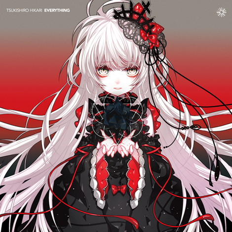

Everything
Tweet
- 01MirrorHoneyComeBear
- 02SODAちびた, そらいろくらぶ
- 03h月代 彩
- 04Rainbow月代 彩
- 05Illumi月代 彩
- 06FeatherfallAaron Cherof, Minecraft
- 07EntorevolutionBernis
- 08彼方高さから躰放ったあなたBlume popo
- 09Time To LoveOctober
- 10Everlasting Truth -band ver-re:plus
- 11森の教会ヨルシカ
- 12落花n-buna